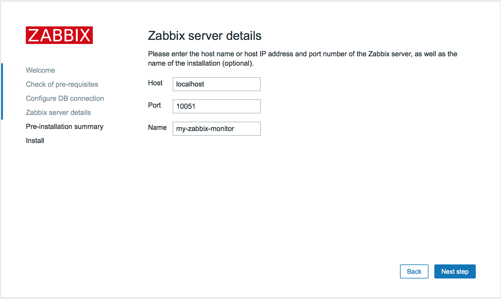

一、zabbix-server安装
#服务器ip地址：192.168.37.144


 Finish。
Finish。


 可以切换不同的监控主机和监控项目
可以切换不同的监控主机和监控项目 这里看到页面下方显示有中文乱码，这是因为zabbix缺少中文字库，切换为英文显示就没有问题了。
这里看到页面下方显示有中文乱码，这是因为zabbix缺少中文字库，切换为英文显示就没有问题了。

2.其它linux服务器配置zabbix-agent
 注意：这里要选择一个模板，可以通过链接指示器进行筛选并添加。
注意：这里要选择一个模板，可以通过链接指示器进行筛选并添加。
#注册服务


1.zabbix-server安装
#安装zabbix仓库
#安装zabbix服务器端
yum install zabbix-server-mysql zabbix-web-mysql -y
#安装zabbix客户端，此处的目的是希望zabbix可以监控自己
yum install zabbix-agent -y
2.数据库安装与配置
#安装mariadb数据库
yum install mariadb*
#启动mariadb
systemctl start mariadb.service
#设置mariadb为开机启动
systemctl enable mariadb.service
#设置mariadb相关参数
vi /etc/my.cnf
[mysqld]datadir=/var/lib/mysqlsocket=/var/lib/mysql/mysql.socksymbolic-links=0character-set-server=utf8 #设置字符集编码wait_timeout=288000 #链接超时lower_case_table_names=1#不区分列名称的大小写innodb_file_per_table=1 #让innodb每个表文件单独存储
#重启mariadb
systemctl restart mariadb.service
#登录mariadb，默认密码为空，需要设置
mysql -uroot -p
#设置root密码
mysqladmin -uroot password admin #此处设置密码为admin
#创建zabbix数据库
MariaDB [(none)]> create database zabbix character set utf8; #注意必须设置为utf-8，否则会出现中文乱码。
#创建zabbix用户，并授予其对zabbix的管理权限
MariaDB [(none)]> grant all privileges on zabbix.* to zabbix@localhost identified by 'zabbix';
MariaDB [(none)]> flush privileges;
#导入zabbix初始化脚本
cd /usr/share/doc/zabbix-server-mysql-3.2.1/
gunzip create.sql.gz
mysql -uzabbix -p
MariaDB [(none)]> use zabbix;
MariaDB [zabbix]> source /usr/share/doc/zabbix-server-mysql-3.2.1/create.sql;
#配置zabbix_server.conf
vi /etc/zabbix/zabbix_server.conf
基于上面的配置，只需要修改：DBPassword=zabbix
一般情况下需要修改如下配置项：
DBHost=localhost
DBName=zabbix
DBUser=zabbix
DBPassword=zabbix
3.zabbix-server服务启动与配置
#启动zabbix-server服务，并配置为开机启动
systemctl start zabbix-server
systemctl enable zabbix-server
#启动httpd服务，并设置为开机启动
systemctl start httpd
systemctl enable httpd
#修改防火墙端口
#关闭Selinux，firewalld
#开启iptablse
#服务器端开放端口
-A INPUT -p tcp -m state --state NEW -m tcp --dport 80 -j ACCEPT
-A INPUT -p tcp -m state --state NEW -m tcp --dport 10051 -j ACCEPT
-A OUTPUT -p tcp -m state --state NEW -m tcp --dport 10050 -j ACCEPT
#客户端开放端口
-A INPUT -p tcp -m state --state NEW -m tcp --dport 10050 -j ACCEPT
-A OUTPUT -p tcp -m state --state NEW -m tcp --dport 10051 -j ACCEPT
#重启iptables：systemctl restart iptables.service
#apache配置：zabbix配置文件
vim /etc/httpd/conf.d/zabbix.conf
#默认情况下只需修改时区
php_value date.timezone Asia/Shanghai
#重启httpd
systemctl restart httpd
4.web管理端初始化配置
#访问页面
#如果成功会跳转到zabbix启动配置页面
next，检查相关配置是否正常，必须全是OK
next，配置数据库连接
next，配置zabbix服务器地址

next，检查相关配置next，安装完成
如果有配置错误的地方，可以修改/etc/zabbix/web/zabbix.conf.php中的相应配置，因为是php文件，修改后保存即可立即生效。
#登录：
默认登录帐号：Admin/zabbix
修改为中文界面，点击右上方的那个小人图标，在Language中选择Chinese(zh_CN)，点击update：
中文效果如下：
二、zabbix-agent配置
1.zabbix-server配置为agent
前面已经在server端安装了zabbix-agent，并且开启了iptables防火墙端口，其它服务器上安装zabbix-agent见下文。
#配置zabbix_agentd.conf
vi /etc/zabbix/zabbix_agentd.conf
Server=127.0.0.1ServerActive=127.0.0.1
Server:被动模式，允许哪台服务器连接Agent。
ServerActive:主动模式，向哪台服务器传送。
此处因为agent与server在同一台服务器，所以不需要修改。
一个Agent 是可以同时向多个服务器端发送数据的喔IP 用逗号分隔。 Server=127.0.0.1,192.168.0.240，表示 Server 的 IP 为 127.0.0.1 和 192.168.0.240，这两台 Zabbix-Server 服务器端可获取此Agent 端的监控数据。
比如：
Server=127.0.0.1,192.168.0.240 #被动模式，Zabbix-Server的IP地址
ServerActive=192.168.0.240:10051 #主动模式
#启动zabbix-agent，并且设置为开机启动
systemctl start zabbix-agent.service
systemctl enable zabbix-agent.service
#在zabbix管理页面中开启对agent的管理
登录zabbix管理web终端：http://192.168.37.144/zabbix
配置--》主机
可以看到当前配置中有一个主机配置项，点击『状态』列中的红色字体『停用的』，将主机状态变更为已启用。
稍等一会刷新页面，看到状态已经变更，并且后面的可用性一列中的『ZBX』变味绿色，表示当前主机已经可以被zabbix-server管理了。
#监控图
监控中--》仪表板--》常用的图形--》图形
如果希望中文显示，可以从windows机器上导出一个中文字体并拷贝到zabbix-server上，方法如下：
控制面板->字体->选择一种中文字库，例如“楷体 常规”，拷贝到桌面上，发现文件名称为『simkai.ttf』，如果文件名称后缀为大写，需要修改为小写的ttf。
将simkai.ttf上传到zabbix-server的/usr/share/zabbix/fonts/路径下。
vi /usr/share/zabbix/include/defines.inc.php
//define('ZBX_GRAPH_FONT_NAME', 'graphfont'); // font file namedefine('ZBX_GRAPH_FONT_NAME', 'simkai'); // font file name
说明：注释掉原先的字体，将simkai配置上，注意这里不需要加文件名后缀ttf。
刷新页面：
#agentIP：192.168.37.143
yum install zabbix-agent -y
并且开启iptables端口：
#客户端端口
vi /etc/sysconfig/iptables
-A INPUT -p tcp -m state --state NEW -m tcp --dport 10050 -j ACCEPT
-A OUTPUT -p tcp -m state --state NEW -m tcp --dport 10051 -j ACCEPT
#重启iptables
systemctl restart iptables.service
#配置zabbix_agentd.conf
vi /etc/zabbix/zabbix_agentd.conf
Server=192.168.37.144ServerActive=192.168.37.144:10051
#启动zabbix-agent，并且设置为开机启动
systemctl start zabbix-agent.service
systemctl enable zabbix-agent.service
#登录web管理终端
配置--》主机--》创建主机
3.weindows7上配置zabbix-agent
#windows主机ip：192.168.37.145
#下载windows版本的zabbix-agent
目前最新版本是3.2.0，下载windows(All)
#下载后拷贝到D盘根目录并解压。
#修改D:\zabbix_agents_3.2.0.win\conf\zabbix_agentd.win.conf
Server=192.168.37.144ServerActive=192.168.37.144:10051
CMD下执行：【注意需要管理员权限运行】
D:\zabbix_agents_3.2.0.win\bin\win64>zabbix_agentd.exe --install -c "D:\zabbix_agents_3.2.0.win\conf\zabbix_agentd.win.conf"
#服务注册成功会打印如下信息
zabbix_agentd.exe [3552]: service [Zabbix Agent] installed successfully
zabbix_agentd.exe [3552]: event source [Zabbix Agent] installed successfully
#查看服务是否添加成功
控制面部--》管理工具--》服务
#启动zabbix-agent服务
在服务管理界面点击启动即可。
#也可以通过CMD命令行执行启动与关闭操作：
#开通端口：
#入站规则：10050
控制面板--》Windows防火墙--》高级设置--》入站规则--》新建规则--》
选择端口--》 TCP--》特定本地端口：10050--》允许链接--》应用规则全选--》起个名称。
#出站规则：10051
同理，在出站规则中开通10051端口。
#登录web管理终端
配置--》主机--》创建主机
方式与开通linux主机类似，只不过模板处选择windows模板


#主机列表

#在仪表盘中查看监控图表
三、zabbix_get
在server上安装zabbix_get可以通过命令获取agent的数据，通常用来验证agent配置是否正确。
#安装
yum install zabbix-get -y
c#简单使用，获取agent的系统类型
[hanqunfeng@localhost ~]$ zabbix_get -s 192.168.37.145 -k system.uname
Windows WIN-2BIHTL26TL8 6.1.7601 Microsoft Windows 7 企业版 Service Pack 1 x64
[hanqunfeng@localhost ~]$ zabbix_get -s 192.168.37.143 -k system.uname
Linux localhost.localdomain 3.10.0-327.el7.x86_64 #1 SMP Thu Nov 19 22:10:57 UTC 2015 x86_64
如果可以获取到正确的信息，说明agent的配置是正确的。